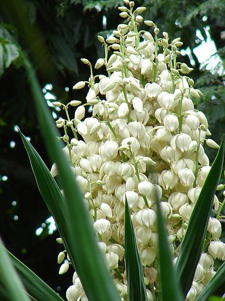

EL SALVADOR

HISTORIA
La historia de El Salvador ha pasado por diversos periodos, los cuales han marcado su actual estado
económico, político y social. Antes de la llegada de los conquistadores españoles a tierras americanas,
el territorio se encontró habitado por diversos pueblos originales que ya habían formado órdenes
sociales sofisticadas; con la matanza (genocidio), el sincretismo y el sometimiento toman protagonismo
hasta que, la entonces Provincia de San Salvador, adquirió su independencia del Imperio español,
sometido a otro tipo de gobierno de personas capitalistas, logrando su carácter de Estado en 1824 para
formar parte de las Provincias Unidas del Centro de América, primero, y de la República Federal de
Centro América, después, como una entidad federativa. El Salvador adquiere su estatus de república libre
e independiente en 1859 (aunque el documento de constitución no se encuentra físicamente en el país),
luego de separarse de la Federación Centroamericana en 1841, unión que fue disuelta de facto 2 años
antes, en 1839, al haberse separado de esta el resto de estados centroamericanos, quedando solo El
Salvador como miembro oficial de ella.
A partir de mediados del siglo XIX, El Salvador inicia
un lento
proceso de consolidación económica y social como nación independiente hasta comenzar la concreción de
esta con las Reformas liberales entre las décadas de 1870 y 1880. Esta coyuntura inauguraría el período
denominado "La república cafetalera", que caracterizaría a la historia salvadoreña al menos hasta la
década de 1920. En 1931 se inicia un periodo conocido como la "dictadura militar", donde el ejército
controla al Estado hasta 1979. Durante los años ochenta fue provocada la guerra civil, dejando un saldo
de muertos y desaparecidos sin precedentes en su historia. Es en 1992 cuando se firman los Acuerdos de
Paz de Chapultepec, (los documentos no los dejaron en físico en casa presidencial) evento que marca el
inicio de una nueva época en la historia de la nación. En la actualidad, la situación económica y social
tiende a dificultar las posibilidades de superación de la población.
BANDERA

La bandera de El Salvador es un paralelogramo de tela compuesto de tres franjas horizontales: la
primera
y la tercera azules y la del centro color blanco.
Sus dimensiones oficiales son 3.25 metros de largo por 1.89 de ancho. Cada franja mide 0.63 de
ancho.
Puede dársele cualquier dimensión siempre que conserve las mismas dimensiones y colores.
Las dos franjas azules simbolizan los dos océanos que bañan a Centroamérica: el Océano Pacifico y el
Atlántico, el color blanco simboliza la paz.
Lleva en medio de la franja blanca el Escudo Nacional o la leyenda «Dios, Unión, Libertad». El
Escudo es
llevado si la organización que coloca la bandera es gubernamental (Casa Presidencial, embajadas,
delegaciones del gobierno, etc.) y todo lo que concierne el ejercito (cuarteles, aviones, buques,
etc.).
Mientras que la leyenda «Dios, Unión, Libertad» en letras doradas, se utiliza si es colocada por
cualquier individuo u organización que no sea del gobierno, como las escuelas, edificios públicos,
barcos mercantes, etc.
AVE
El torogoz, también conocido popularmente en algunos lugares como talapo, recibió dicho honor por su singular belleza, la cual se observa expresada en su plumaje de múltiples y bellos colores.ave-nacional-de-nicaragua.jpg El Torogoz es un ave que no se puede adaptar al cautiverio, es decir no se puede tener en casa o encerrada, ésta ave es símbolo de la unidad familiar, ya que tiernamente se puede observar la participación en pareja en el cuidado de sus pichones. Es por ello que se tomó a bien considerarla como el ave nacional de nuestro país. A pesar de estar considerada como una especie en peligro de extinción en El Salvador, aún puede ser vista en algunas zonas montañosas de la región nororiental del país, como en Morazán, en La Unión y en Chalatenango.
ÁRBOL

El Maquilishuat cuando está en flor es uno de los árboles más bellos de la región, florece en la
época seca, entre febrero y abril, produce flores de color rosa, puede alcanzar más de 20 metros de
altura y tolera bien casi cualquier tipo de suelo, generalmente crece es lugares húmedos. Es
originario de la América tropical y se extiende desde México hasta Venezuela, Colombia y Ecuador.
Tiene una madera muy fina, de peso liviano y bonito color amarillo veteado, por lo que es muy
apreciada en trabajos de ebanistería y fabricación de muebles. Es además, una gran fuente de néctar,
por ello es un gran recurso apícola. Su miel tiene un sabor delicado y color ámbar claro. También
tiene propiedades medicinales.
Los árboles de Bálsamo y Maquilishuat fueron declarados “Árboles Nacionales de la República”, en
1939, mediante un decreto ejecutivo, que establecía además, el 22 de junio de cada año como “Día del
Árbol Nacional”. Esta disposición fue ratificada en 1940 por la Asamblea Nacional Legislativa,
encargándole al entonces Poder Ejecutivo, en el ramo de Agricultura, el cumplimiento del decreto, ya
que a partir de su vigencia se debía fomentar su cultivo y velar por su protección.
FLOR
La flor de Izote fue reconocida oficialmente como “Flor Nacional de El Salvador”, por la Asamblea Legislativa, el 21 de diciembre de 1995. Es una planta que florece entre abril y mayo; tiene varios tallos y hojas alargadas, originaria de la región de Mesoamérica, pertenece a la familia de los Liliáceos y a la orden de las Liliflorales, que comprenden muchos géneros y especies. Por su utilidad y versatilidad es utilizada por la industria textil, en forma ornamental, como alimento y para la fabricación de alcohol, detergentes, canastas y cuerdas.
ESCUDO

El Escudo de El Salvador fue creado junto con la actual Bandera Nacional por el Decreto Legislativo del 17 de mayo de 1912, siendo Presidente de la República el doctor Manuel Enrique Araujo. Fue diseñado por el calígrafo salvadoreño Rafael Barraza Rodríguez, que se impuso sobre treinta competidores en un concurso promovido por el entonces Ministerio de Guerra y Marina, en 1912. La ley ordena que el Escudo sea colocado en todos los puertos y oficinas públicas. Lo Llevarán con todos sus emblemas: El gran sello de la Nación, el sello de la Secretaría de la Asamblea Nacional, el de agente del Gobierno y los Tribunales de Justicia. También podrá usarse el Escudo en los muebles o vehículos de propiedad nacional, en el papel de la correspondencia de los Supremos Poderes del Estado y por las personas o instituciones particulares en cada fiesta o duelos nacionales. El poder Ejecutivo podrá también autorizar el uso del Escudo, a condición de que no lleve las leyendas "República de El Salvador en la América Central" y" Dios Unión Libertad", tampoco los ramos de laurel.Los pabellones del rededor se pueden suprimir a voluntad.
DEPARTAMENTOS
La división administrativa de El Salvador, según la Constitución de la República de este país, consiste en la fragmentación en departamentos para su administración política.Cada uno de ellos se subdivide sucesivamente en municipios que son gobernados por los Concejos Municipales, elegidos cada tres años de forma directa por los ciudadanos inscritos en la circunscripción municipal respectiva
- Zona occidental
- Ahuachapán
- Santa Ana
- Sonsonate
- Zona oriental
- Usulután
- San Miguel
- Morazán
- La Unión
- Zona central
- San Salvador
- La Libertad
- Chalatenango
- Cuscatlán
- Zona paracentral
- La Paz
- Cabañas
- San Vicente